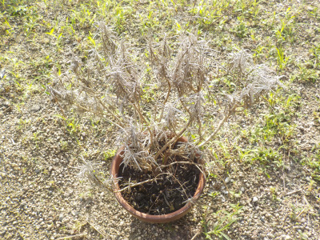
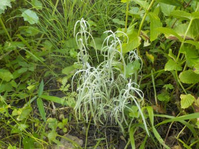
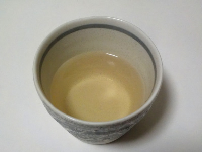
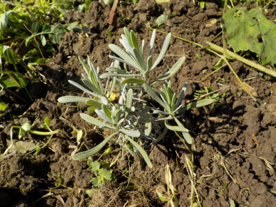
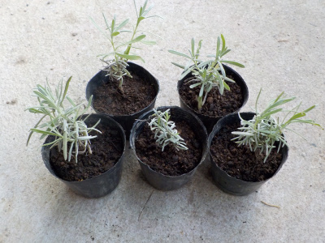
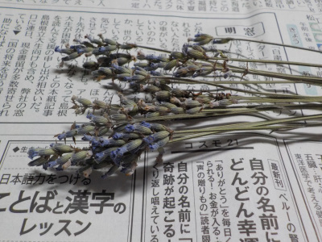
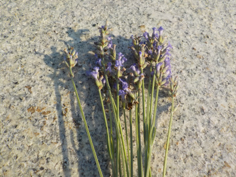
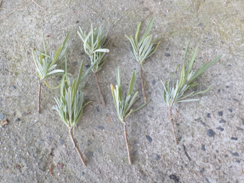
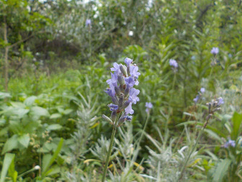

ラベンダーを1鉢枯らしました。
2023/09/02

一応日差しが弱くなる場所に置いていたんですが、枯れてしまいました。
素焼き鉢なので乾燥し過ぎたんじゃないかと思います。
もうちょっと涼しくなったら挿し木して増やそうと思います。
2023/09/02

一応日差しが弱くなる場所に置いていたんですが、枯れてしまいました。
素焼き鉢なので乾燥し過ぎたんじゃないかと思います。
もうちょっと涼しくなったら挿し木して増やそうと思います。
2023/07/17

ラベンダーよりも雑草の成長が早いみたいで、雑草の下に隠れてしまっていました。
日陰でも枯れないのは凄いですが、あまり大きくなっていません。回りの雑草を刈ったので、これから大きくなるかもしれませんが、また雑草に埋もれてしまうんだろうな。
2023/05/21

手作りといっても、焼酎にラベンダーの花を漬けただけのラベンダー酒です。
花を沢山漬けたわけじゃないですが、味も香りもしっかりあって濃かったので水で薄めました。
飲むと薬草っぽい味がしました。砂糖を入れたら、薬膳酒っぽいものになりました。
ラベンダーの香りがする甘いお酒は特に美味しいとは思いませんが、なんか体に良さそうで癒される気分になるので、あってもいいかなーと思いました。
2023/04/02

ラベンダーの活用方法はまだ見つかっていませんが、育っているので地植えにしました。
無計画ですね。後で邪魔になる確率が大です。
2022/10/10

ラベンダーの活用方法はまだ見つかっていませんが、挿し芽が成功したのでポットに植替えました。
活用方法が見つかって育てるとしたら、春に地植えすると思います。
2022/07/10

車の中で乾燥させたので車内はラベンダーの香りになると思ったんですが、全然臭わなかったです。
鼻を近づければ香りがするんですけど、離すとダメです。このままで芳香剤としては使えないです。
見るだけのドライフラワーを飾る趣味はないので、他の利用方法を探そうと思います。
2022/07/02

花は乾燥させて保存するらしいので、夏の自動車の車内に入れました。
たぶん2,3日でパリパリになるでしょう。

花の元の部分は挿し木します。成功したら畑に植えようと思ってます。
2022/06/27

我が家のラベンダーは茎が少ないのでスカスカです。もうちょっと見た目を良くしたいです。
後、ラベンダー自体は地味なので観賞以外で使わないなら育てる必要がないんじゃないかと思いました。
今まで観賞しかしていなかったので、今後はハーブとして活用しようと思っています。使ってみて良ければ続けて育てるけど、そうじゃなかったら止めようかと思ってます。
好きな香りなので活用したいです。